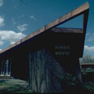

|  |
Benoit and Gregory Houses
Built in 1865
Office of the current College President |
Benoit & Gregory Houses were built in 1968 as residences for the Marist Brothers living on campus. Both had sixteen bedrooms, was octagonal, and constructed identically. Benoit House was named in the memory of Brother Francis Xavier Benoit who served Marist as a teacher for nineteen years in addition to serving as a Director of Construction. Gregory House was named in remembrance of Brother Joseph Gregory Marchessault who was chairman of the Physics Department at Marist until his death in 1969. Benoit & Gregory were both removed in 2009, being replaced with the Hancock Center.